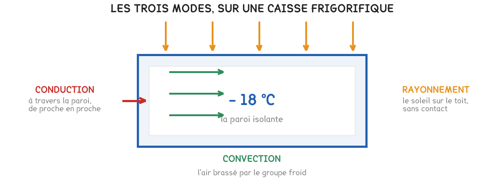

Tle Bac Pro CTRM
Une remorque surgelée à − 18 °C passe quatre heures au soleil, groupe froid coupé. À l'ouverture, − 9 °C. La chaleur a trouvé trois chemins, et chacun se ferme autrement.
2 exercices · 21 items d'entraînement · 1 simulation · 3 figures
Savoirs travaillés
Une semi-remorque frigorifique transporte des surgelés à − 18 °C. Elle reste quatre heures sur un parking, groupe froid coupé, par 32 °C à l’ombre et plein soleil sur le toit. À l’ouverture, le thermomètre indique − 9 °C.
Par où la chaleur est-elle entrée, et par où pourrait-on l’empêcher d’entrer ?
On ne dit pas « le froid sort » : c’est la chaleur qui entre. Elle va toujours spontanément du corps le plus chaud vers le plus froid. Le froid n’est pas une chose qui circule, c’est un manque de chaleur.

La chaleur passe d’un corps à l’autre de trois façons, et une seule d’entre elles se passe de contact.
| Le mode | Comment elle passe | Contact nécessaire |
|---|---|---|
| Conduction | de proche en proche dans la matière, sans que la matière bouge | oui |
| Convection | transportée par un fluide qui se déplace, air ou liquide | oui |
| Rayonnement | par des ondes, même dans le vide | non |
Série · THERM
Le « froid du sol » est une conduction de chaleur — dans l’autre sens. C’est la chaleur du pied qui part dans le sol. Dire « le froid entre » inverse le sens réel, et fait chercher la solution au mauvais endroit.
Au TP, trois tiges chauffées au même bout ont lâché leur punaise dans l’ordre : cuivre, acier, plastique. Les métaux conduisent bien la chaleur ; les isolants la freinent.
Les bons isolants emprisonnent de l’air immobile : laine, mousse, polystyrène. L’air qui ne bouge pas conduit très mal la chaleur ; dès qu’il circule, il la transporte — c’est la convection qui reprend la main.
Série · THERM
La couverture de survie n’isole presque pas. Elle est trop mince pour freiner la conduction ; elle agit contre le rayonnement, en le renvoyant. Posée à même le sable brûlant, elle laisse passer toute la conduction par le fond.
La caisse est passée de − 18 °C à − 9 °C en quatre heures : + 9 °C en 4 h. On peut en tirer une hausse moyenne par heure, et la prolonger.
Série · THERM
Exercice · THERM
Dire en deux phrases pourquoi prolonger la hausse de la caisse bien au-delà de sept heures donnerait un résultat faux.
| La chaleur va du chaud au froid | on ne dit jamais « le froid entre » |
| Trois modes, trois parades | toit blanc, mousse épaisse, portes fermées |
| Isolant = air immobile piégé | mousse, laine, polystyrène ; les métaux conduisent |
Ce qu’il faut retenir de la séquence, à manipuler : quelques étapes, un geste à chacune, et un défi pour finir.
Un sujet entier, bâti comme l’épreuve de sciences : quatre parties cotées séparément, deux appels au professeur. Le format complet est détaillé sur la fiche de la séquence 2.
| APP | ANA | REA | VAL | COM |
|---|---|---|---|---|
| s’approprier | analyser | réaliser | valider | communiquer, aux appels |
Un livreur transporte des glaces dans un caisson isotherme fixé à l’arrière d’un scooter, en plein été. Pour choisir l’habillage du caisson, on met 2 kg de glaçons dedans et on pèse l’eau fondue au bout d’une heure.
| L’habillage | aucun | mousse polyuréthane | mousse + housse réfléchissante |
|---|---|---|---|
| Eau fondue en 1 h | 200 g | 60 g | 45 g |
Problématique : « Quel habillage choisir pour une tournée de six heures, et pourquoi la housse apporte-t-elle encore quelque chose ? »
Partie 1 · APP — Nommer le mode de transfert pour chacun de ces trois chemins : le soleil sur le couvercle, la paroi chauffée au contact de la selle, l’air qui entre à chaque ouverture.
Partie 2 · ANA — Proposer un protocole pour comparer deux habillages de façon honnête. Dire ce qui doit rester identique d’un essai à l’autre.
APPEL 1 — présenter le protocole au professeur avant de lancer l’essai.
Partie 3 · REA — Calculer combien de temps tiendraient les 2 kg de glace avec chaque habillage, puis ce qui fond pendant une tournée de six heures.
APPEL 2 — peser l’eau fondue devant le professeur.
Partie 4 · VAL — Chiffrer ce qu’apporte chaque habillage, et répondre à la problématique.
Série · THERM
Exercice · THERM
Répondre à la problématique en deux phrases : l’habillage retenu, et contre quel mode agit la housse.
Cette page rappelle la séquence. Elle ne remplace pas les documents distribués et ne donne aucun corrigé.